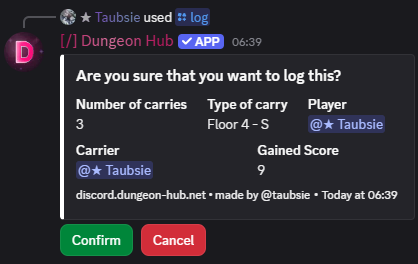

/log
Description
Use this command within a carry ticket channel to log completed carries. The bot validates the ticket, prompts for confirmation, and records the log, awarding you score based on the carry tier and difficulty.
This command is only available in ticket channels that have a relatedCarryTier configured. The ticket panel must be linked to a carry tier for the log command to function. See Ticket Panel Configuration for details on setting up carry integration.
Arguments
Name | Type | Description | Optional? | Additional |
|---|---|---|---|---|
| Integer | Number of carries to log. | ❌ No | Min: 1, Max: 200 |
| Autocompleted String | Difficulty identifier of the carry. | ❌ No |
Examples
Log a carry

Notes
The ticket channel must be associated with a ticket panel that has a
relatedCarryTierconfigured.The carry difficulty must match one of the difficulties configured for the related carry tier.
After logging, your score is updated and can be viewed with /score.
See Also
Ticket System: overview of how carry tickets work
Ticket Panel Configuration: configure
relatedCarryTierandrelatedCarryDifficulty/score ✏️: your score increases from successful logs
/leaderboard: see how logs affect rankings
/manage-score: admins can resolve edge cases manually
Carry Difficulty ✏️: the Carry Difficulty you enter